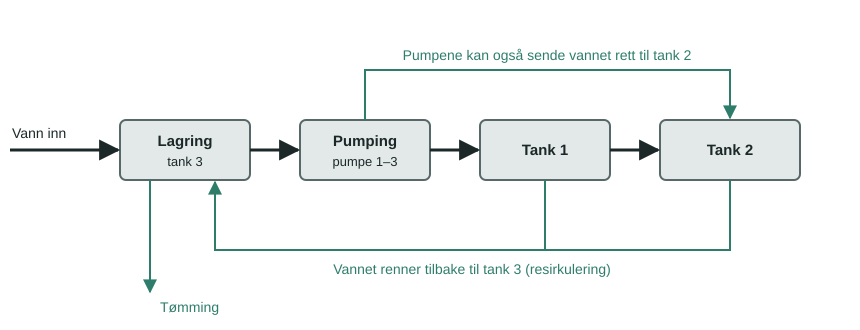
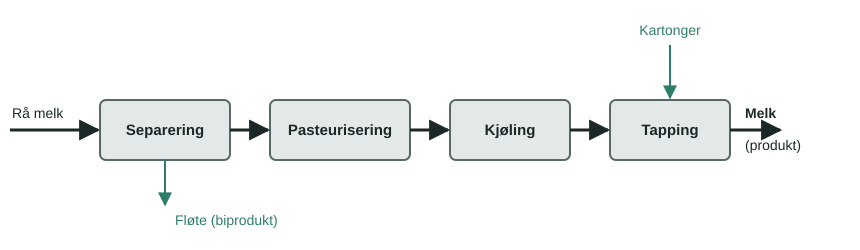

Tegn et blokkskjema
Et blokkskjema skal kunne leses av alle på arbeidsplassen, ikke bare av den som tegnet det. Derfor følger vi noen enkle regler. På denne siden lærer du reglene, og du ser hvordan vi tegner et blokkskjema for pumperommet på skolen.
Reglene
- Én boks per trinn. Bruk rektangler som er omtrent like store. Skriv hva som skjer i trinnet, for eksempel «Pumping» eller «Filtrering».
- Hovedstrømmen går fra venstre mot høyre. Råstoffet kommer inn til venstre, og produktet går ut til høyre. I et høyt skjema kan den gå ovenfra og ned.
- Rette linjer med pilspiss. Linjene er vannrette eller loddrette og knekker i rett vinkel. Pilspissen viser retningen.
- Alle strømmer inn og ut har navn. Skriv ved pila hva som strømmer, for eksempel «vann inn» eller «slam».
- Tilsetninger kommer ovenfra, avfall går ut nedover. Da er det lett å skille dem fra hovedstrømmen.
- Resirkulering tegnes bakover, gjerne under hovedstrømmen.
- Unngå at linjer krysser hverandre. Flytt heller en boks eller en linje.
- Gi skjemaet en tittel som sier hvilket anlegg det gjelder.
Slik går du fram
- Finn det som går inn og det som kommer ut. Hva er råstoffet, og hva er produktet?
- List opp trinnene i rekkefølge. Skriv dem på en linje før du tegner.
- Tegn boksene på en rad fra venstre mot høyre.
- Tegn hovedstrømmen med piler mellom boksene.
- Legg til det som tilsettes og det som tas ut, med navn på hver pil.
- Legg til resirkulering og andre veier stoffet kan ta.
- Sjekk skjemaet: Kan du følge en pil fra det som går inn, til det som går ut? Har alle pilene navn?
Gjennomgått eksempel: pumperommet
Pumperommet på skolen har tre tanker og tre pumper. Vannet går i ring: det pumpes opp fra en tank i bunnen og renner tilbake dit.
- Inn og ut: Vann fylles på (inn). Anlegget kan tømmes (ut). Ellers går vannet rundt i anlegget.
- Trinnene i rekkefølge: lagring i tank 3 → pumping med pumpe 1–3 → tank 1 → tank 2.
- Bokser: fire bokser på en rad: Lagring, Pumping, Tank 1 og Tank 2. Under navnet skriver vi hvilken tank eller pumpe det gjelder. I tank 1 og tank 2 skjer det ingen omdanning av vannet. Derfor bruker vi navnet på tanken.
- Hovedstrøm: piler fra Lagring til Pumping, videre til Tank 1 og Tank 2.
- Inn og ut av anlegget: «Vann inn» til lagringen fra venstre, og «Tømming» nedover fra lagringen.
- Andre veier: Pumpene kan også sende vannet rett til tank 2. Vi tegner en pil over boksene. Fra tank 1 og tank 2 renner vannet tilbake til tank 3. Det er resirkulering, så vi tegner pila bakover under boksene.
- Sjekk: Vi kan følge vannet fra «Vann inn», rundt i anlegget og ut ved «Tømming». Alle piler har navn, og ingen linjer krysser hverandre.

Tegn først en kladd med blyant. Det er vanlig å flytte boksene et par ganger før linjene ikke krysser hverandre lenger.
Øv selv: meieriet
Les teksten og tegn et blokkskjema. Følg stegene over.
Råmelk kommer til meieriet med tankbil. Først skilles fløten fra i en separator, og fløten går ut av prosessen som et biprodukt. Så varmes melka opp til omtrent 72 °C i noen sekunder for å drepe bakterier. Dette kalles pasteurisering. Deretter kjøles melka ned. Til slutt fylles den på kartonger.
Fasit

Test deg selv
1. Hvor kommer råstoffet vanligvis inn i et blokkskjema?
- Til venstre
- Til høyre
- Nederst
Hovedstrømmen går fra venstre mot høyre. Råstoffet kommer inn til venstre, og produktet går ut til høyre.
2. Hva skal stå i en boks?
- Størrelsen på tanken
- Hva som skjer i trinnet, for eksempel «Pumping»
- Navnet på den som tegnet skjemaet
Boksen viser trinnet. Navnet skal si hva som skjer der.
3. Hvordan tegner du linjene mellom boksene?
- Som buede linjer uten pilspiss
- Som rette linjer med pilspiss, vannrett eller loddrett
- Som stiplede linjer på skrå
Rette linjer med pilspiss gjør skjemaet ryddig og viser hvilken vei stoffene går.
4. I pumperommet renner vannet fra tank 1 og tank 2 tilbake til tank 3. Hvordan tegner du det?
- Det tegnes ikke, fordi det ikke er en del av prosessen
- Som en ny boks til høyre for tank 2
- Som en pil bakover, under boksene
Vann som går tilbake til et tidligere trinn, er resirkulering. Det tegnes som en pil bakover, gjerne under hovedstrømmen.
5. Du er ferdig med et blokkskjema. Hva bør du sjekke?
- At du kan følge pilene fra det som går inn til det som går ut, og at alle piler har navn
- At alle boksene har forskjellig farge
- At alle ventilene er tegnet med
Et godt blokkskjema kan følges fra inn til ut, og alle strømmer har navn. Ventiler hører ikke hjemme i et blokkskjema.
Ordliste
| Begrep | Forklaring | Engelsk |
|---|---|---|
| blokkskjema | En forenklet tegning av en prosess. Hvert trinn er en boks, og pilene viser hvordan stoffene går mellom trinnene. | block diagram |
| hovedstrøm | Strømmen som går gjennom hele prosessen, fra råstoff til produkt. | |
| resirkulering | Å sende en del av en strøm tilbake til et tidligere sted i prosessen, slik at stoffet blir brukt på nytt. | recycling |
| biprodukt | Noe som blir til overs i en prosess, men som har en nytte og kan selges eller brukes. |
Les mer
- Hva er et blokkskjema? forklarer hva boksene og pilene betyr, og hvordan du leser et blokkskjema.
Om kildene: Teksten, eksemplene og figurene på denne siden er laget for dette nettstedet. Eksemplet bygger på det tekniske flytskjemaet for pumperommet ved Sauda vgs. Siden bygger på undervisningsopplegg i kjemiprosess- og laboratoriefag ved Sauda vgs, som er utarbeidet med utgangspunkt i blant annet Kjemien stemmer, Laboranten og åpne nettkilder.